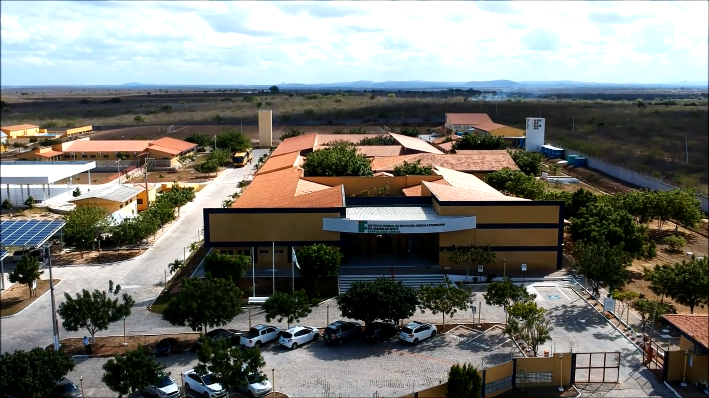
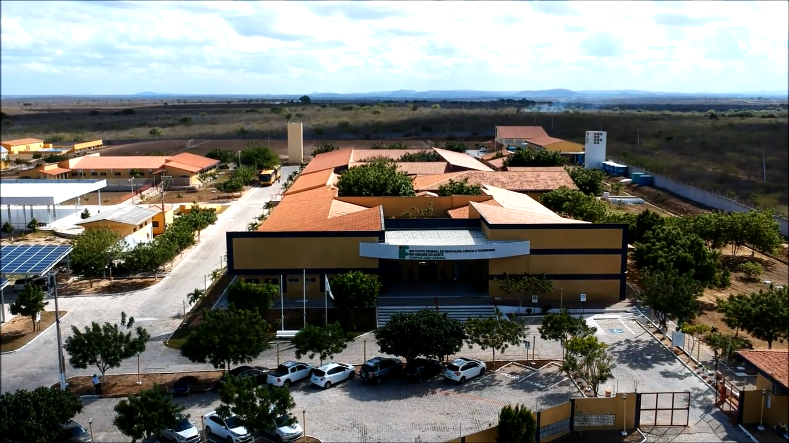
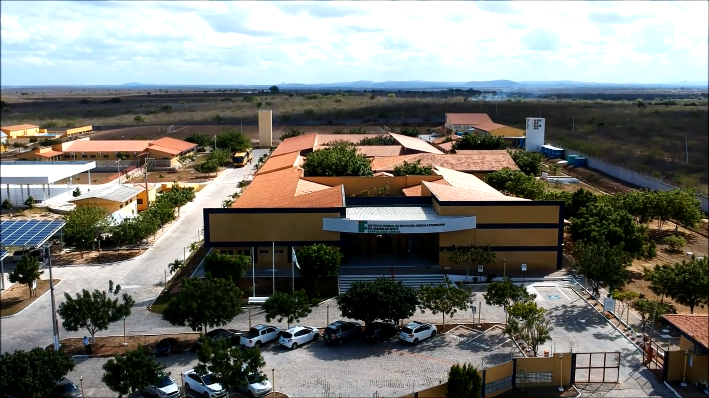

Bem-vindo ao IFRN Campus João Câmara
Explore o nosso campus, veja o mapa e faça uma visita virtual!

Explore o nosso campus, veja o mapa e faça uma visita virtual!
IFRN João Câmara: Educação que Transforma Vidas
O IFRN João Câmara é um espaço de ensino, inovação e transformação, onde a educação pública de qualidade muda vidas e fortalece a região.
Descubra cada detalhe do campus e veja como transformamos o futuro com educação e inovação.
Faça já sua Visita Virtual! Conheça o Melhor do IFRN Campus João Câmara